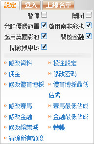
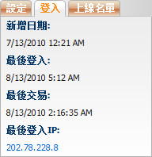

賬號設定
定義:
這是總代理查看或修改他/她下線的設定。

Setting
用詞注解:
-
允許優勝冠軍: 顯示此賬號是否被允許優勝冠軍投注。
-
啟用南非彩池: 顯示賬號是否被啟用賽馬南非彩池。
-
啟用英國彩池: 顯示賬號是否被啟用賽馬英國彩池。
-
啟用金融: 顯示賬號是否被允許金融投注。
-
啟用娛樂城: 顯示賬號是否被啟用娛樂城遊戲。
功能支持:
- 修改資料: 允許用戶修改名, 姓, 電話, 手機, 電郵, 傳真。
- 投注設定: 允許用戶修改投注設定。請查閱投注設定指引以了解此頁面詳情。
- 佣金 允許用戶修改下線佣金。請查閱佣金設定指引以了解詳情。
- 修改密碼: 此處可為下線更換密碼。密碼必須至少6個字符, 包括2個字母和2個數字。
- 修改體育博彩: 允許用戶修改下線的體育博彩設定, 請查閱編輯體育博彩設定指引以了解詳情。
- 修改賽馬: 允許用戶修改下線的賽馬設定, 請查閱編輯賽馬設定指引以了解詳情。
- 修改金融: 允許用戶修改下線的金融設定, 請查閱編輯金融設定指引以了解詳情。
- 修改娛樂城: 允許用戶修改下線的娛樂城設定, 請查閱編輯娛樂城設定指引以了解詳情。
- 體育博彩最低佔成: 允許用戶修改體育博彩最低佔成, 請查閱體育博彩最低佔成設定指引以了解詳情。
- 賽馬最低佔成: 允許用戶修改賽馬最低佔成, 請查閱賽馬最低佔成設定指引以了解詳情。
- 金融最低佔成: 允許用戶修改金融最低佔成, 請查閱最低金融佔成設定指引以了解詳情。
- 轉賬: 更換轉賬設定。請查閱轉賬設定指引以了解詳情。
- 清除所有信用額度: 允許用戶清除下線所有信用額度。
注:
總代理可以查看登入日誌包括: 新增日期, 最後交易, 登入的IP及在線列表, 只需點擊登入, 在線列表標籤。

登入信息